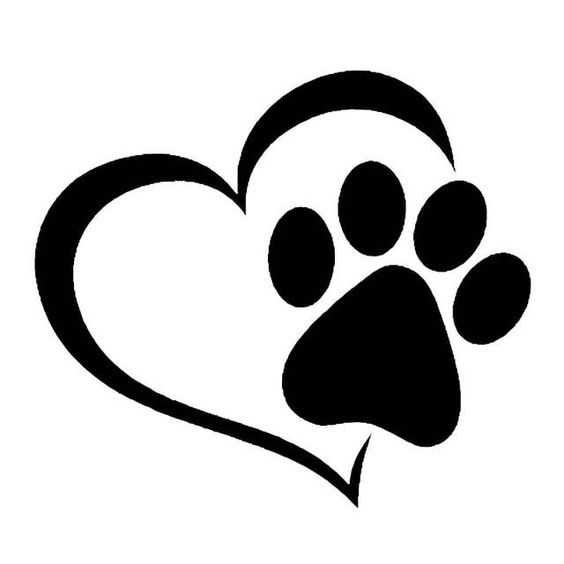

Grosch Viktória
Kutyakiképző
Kutyák rehabilitálásaval foglalkozom. Célom elnyerni bizalmukat, megoldani viselkedési problémáikat, hogy újra kiegyensúlyozott, boldog, teljes életet élő kutyaként élhessenek.
Hobbiként weboldalak fejlesztésével kezdtem el foglalkozni